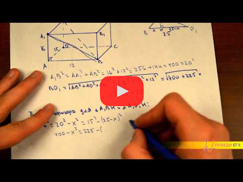

Наибольшее и наименьшее значение функций

Снова задание на производные, но теперь уже на исследование функции на точки экстремума (точки максимума и точки минимума). Алгоритм очень прост: нужно взять производную функции, приравнять ее к нулю и найти решения данного уравнения. Это и будут точки экстремума. Если нужно найти максимальное или минимальное значение функции, то в ответ нужно писать не саму точку экстремума, а именно ЗНАЧЕНИЕ функции в этой точке (т.е. просто подставить эту точку в функцию). Удачи!